<title>Flow section, four ways</title>
<meta name="viewport" content="width=device-width,initial-scale=1,viewport-fit=cover">
<!-- The Flow section of the right rail, redrawn four ways over the committed
     build, each loaded with the six reference ICPs' own story banks. Every
     picture is a capture of proto/flowredesign/flow.html taken by shoot.js;
     every figure is read off shots/facts.json. -->
<style>
:root{color-scheme:dark;
 --bg:#0C0D12;--panel:#171A22;--panel-2:#20242E;--edge:rgba(255,255,255,.08);--edge-2:rgba(255,255,255,.15);
 --ink:#EFEDE8;--mid:#B8B4AC;--dim:#8F8B85;--accent:#7EB8D4;--gold:#DFCC7E;--root:#D6524C;--r:14px;--r-s:10px}
@media (prefers-color-scheme:light){:root:not([data-theme="dark"]){color-scheme:light;
 --bg:#E9E8E3;--panel:#FFFFFF;--panel-2:#F3F3F1;--edge:rgba(20,22,28,.10);--edge-2:rgba(20,22,28,.20);
 --ink:#15171D;--mid:#45433E;--dim:#6B6862;--accent:#2F6E92;--gold:#8A7520;--root:#B23A34}}
:root[data-theme="light"]{color-scheme:light;
 --bg:#E9E8E3;--panel:#FFFFFF;--panel-2:#F3F3F1;--edge:rgba(20,22,28,.10);--edge-2:rgba(20,22,28,.20);
 --ink:#15171D;--mid:#45433E;--dim:#6B6862;--accent:#2F6E92;--gold:#8A7520;--root:#B23A34}
:root[data-theme="dark"]{color-scheme:dark}
*{box-sizing:border-box}
body{margin:0;background:var(--bg);color:var(--ink);font:16px/1.58 Inter,system-ui,-apple-system,"Segoe UI",Roboto,sans-serif}
main{max-width:1180px;margin:0 auto;padding-inline:16px;padding-block:40px 96px}
h1{font-size:34px;line-height:1.15;margin:0 0 10px;font-weight:650;text-wrap:balance}
h2{font-size:23px;line-height:1.25;margin:56px 0 12px;font-weight:620;text-wrap:balance}
h3{font-size:17px;margin:0 0 6px;font-weight:600}
p,li{max-width:70ch;color:var(--mid)}
p b,li b,td b{color:var(--ink);font-weight:600}
.lede{font-size:18px;color:var(--ink);max-width:66ch}
code{font-size:.9em}
.num{font-variant-numeric:tabular-nums;white-space:nowrap}
.row5{display:grid;grid-template-columns:repeat(5,minmax(0,1fr));gap:10px;margin:16px 0;align-items:start}
.row4{display:grid;grid-template-columns:repeat(5,minmax(0,1fr));gap:10px;margin:16px 0;align-items:start}
figure{margin:0;background:var(--panel);border:1px solid var(--edge);border-radius:var(--r-s);padding:8px}
figure a{display:block}
figure img{width:100%;height:auto;display:block;border-radius:6px;background:#000}
figcaption{font-size:13px;color:var(--dim);margin:6px 2px 0;line-height:1.4}
figcaption b{color:var(--ink);font-weight:600}
.wrap{overflow-x:auto}
table{border-collapse:collapse;width:100%;font-size:15px;margin:10px 0}
th,td{text-align:left;vertical-align:top;padding:9px 10px;border-top:1px solid var(--edge)}
th{color:var(--dim);font-weight:500;font-size:13px}
td{color:var(--mid)}
td.best{color:var(--ink);font-weight:600}
.finding{border-left:3px solid var(--root);padding:4px 0 4px 18px;margin:18px 0}
.finding p{margin:8px 0}
.q{background:var(--panel);border:1px solid var(--edge);border-radius:var(--r);padding:16px 18px;margin:14px 0}
.q p{margin:6px 0}.q ul{margin:6px 0;padding-left:20px}
.rests{font-size:13px;color:var(--dim)}
@media (max-width:900px){.row5,.row4{grid-template-columns:1fr 1fr}}
@media (max-width:520px){h1{font-size:28px}.row5,.row4{grid-template-columns:1fr}}
</style>

<main>
<h1>Flow section, four ways</h1>
<p class="lede">His words: "the flow element, that has like mania and discriminant mania and so on, give me four different options of this design as well, that's more in alignment with what we're doing now. And I'm assuming these are patterns that are impairing flow." Four options, drawn in the icon language of the glass bar and the celestial rail, laid over the real build and loaded with each ICP's own stories.</p>

<h2>His assumption, checked against six people</h2>
<div class="finding">
<p><b>For three of the six it is right, and for the other three nothing on the list is holding flow at all.</b></p>
<p>The section lists every pattern the reading holds on the picked layer. Flow closes at a seat only when that seat is held. James, Derek and Diane each have held seats, and most of their patterns sit on them: 43 of 49 for James, 54 of 61 for Derek, 24 of 42 for Diane. Sofia, Marcus and Angela have no held seat: flow passes every one, and their 11, 13 and 20 patterns still print as a list. Today the section cannot tell the two apart, so all four options below say which patterns sit where flow is held, and Pinch says in words when nothing is.</p>
</div>

<h2>The five, on James</h2>
<p>Hyper layer picked, the one that carries names like Dysregulation / Collapse. Desk width, the rail as it renders.</p>
<div class="row5">
<figure><a href="shots/0-james-1600.jpg">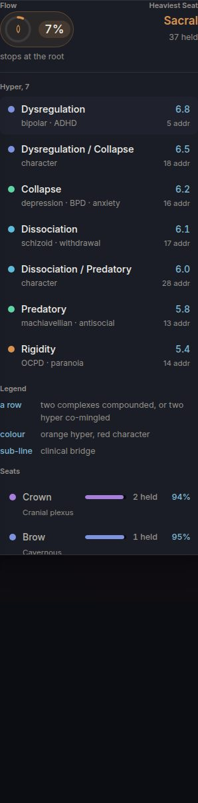</a><figcaption><b>Shipped.</b> A list with a weight and an address count on every row, a clinical label under each, a legend, then seven seat rows.</figcaption></figure>
<figure><a href="shots/1-james-1600.jpg">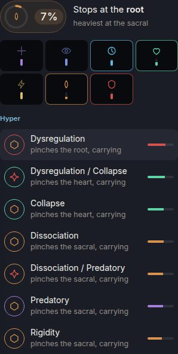</a><figcaption><b>Rows.</b> The list kept. Each row led by its tier mark in its seat's ring, and says which seat it pinches.</figcaption></figure>
<figure><a href="shots/2-james-1600.jpg">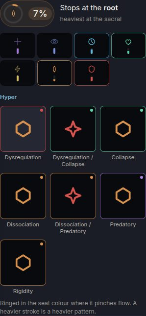</a><figcaption><b>Tiles.</b> Rail tiles. Stroke width is weight, the corner dot is the seat.</figcaption></figure>
<figure><a href="shots/3-james-1600.jpg">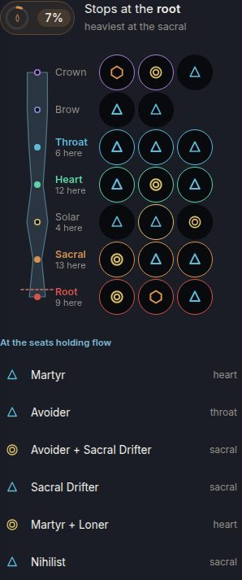</a><figcaption><b>River.</b> The seven seats as one channel, narrowed where flow closes, every pattern hung on its seat.</figcaption></figure>
<figure><a href="shots/4-james-1600.jpg">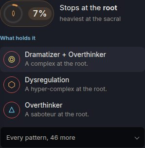</a><figcaption><b>Pinch.</b> Where flow stops, and the three patterns holding it there. The rest one press away.</figcaption></figure>
</div>
<h2>The same five, on Derek and on Angela</h2>
<div class="row5">
<figure><a href="shots/0-derek-1600.jpg">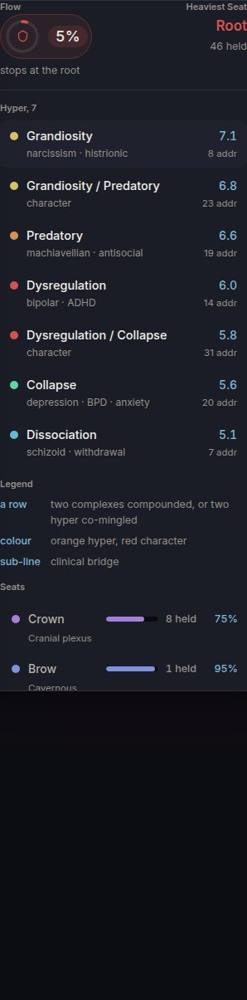</a><figcaption><b>Shipped</b>, Derek.</figcaption></figure>
<figure><a href="shots/1-derek-1600.jpg">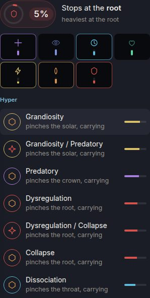</a><figcaption><b>Rows</b>, Derek.</figcaption></figure>
<figure><a href="shots/2-derek-1600.jpg">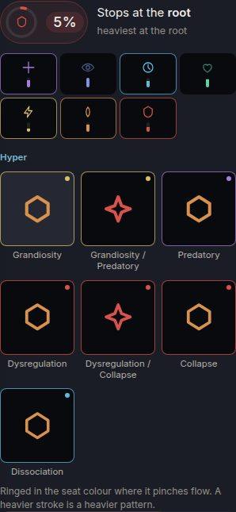</a><figcaption><b>Tiles</b>, Derek.</figcaption></figure>
<figure><a href="shots/3-derek-1600.jpg">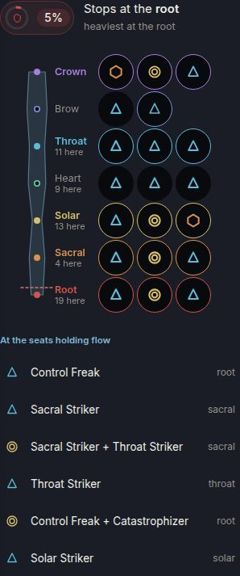</a><figcaption><b>River</b>, Derek.</figcaption></figure>
<figure><a href="shots/4-derek-1600.jpg">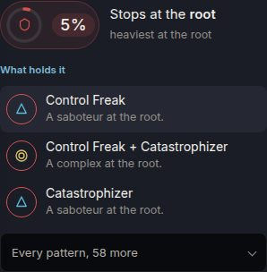</a><figcaption><b>Pinch</b>, Derek.</figcaption></figure>
</div>
<div class="row5">
<figure><a href="shots/0-angela-1600.jpg">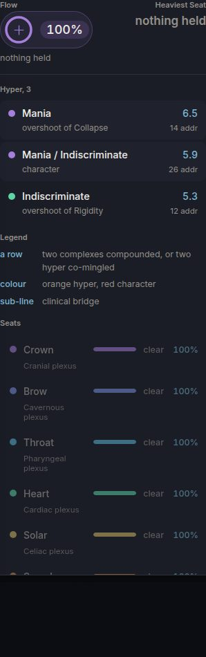</a><figcaption><b>Shipped</b>, Angela. No held seat.</figcaption></figure>
<figure><a href="shots/1-angela-1600.jpg">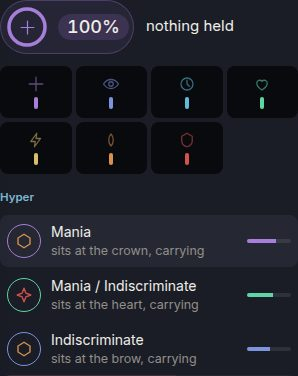</a><figcaption><b>Rows</b>, Angela.</figcaption></figure>
<figure><a href="shots/2-angela-1600.jpg">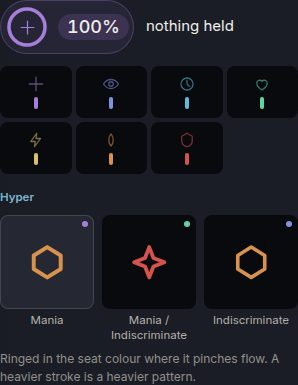</a><figcaption><b>Tiles</b>, Angela.</figcaption></figure>
<figure><a href="shots/3-angela-1600.jpg">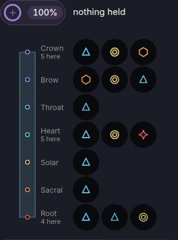</a><figcaption><b>River</b>, Angela.</figcaption></figure>
<figure><a href="shots/4-angela-1600.jpg">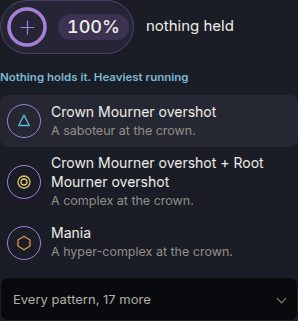</a><figcaption><b>Pinch</b>, Angela. Says nothing holds it.</figcaption></figure>
</div>
<h2>On a phone</h2>
<div class="row5">
<figure><a href="shots/0-james-390.jpg">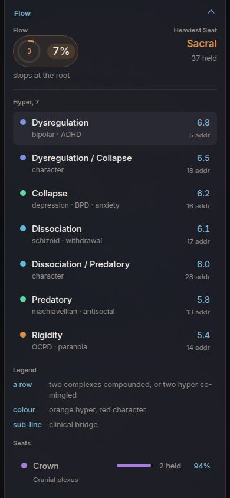</a><figcaption><b>Shipped</b>, 390.</figcaption></figure>
<figure><a href="shots/1-james-390.jpg">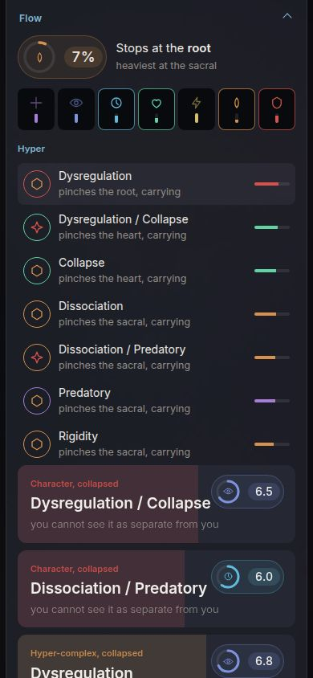</a><figcaption><b>Rows</b>, 390.</figcaption></figure>
<figure><a href="shots/2-james-390.jpg">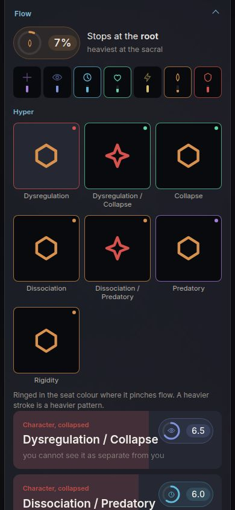</a><figcaption><b>Tiles</b>, 390.</figcaption></figure>
<figure><a href="shots/3-james-390.jpg">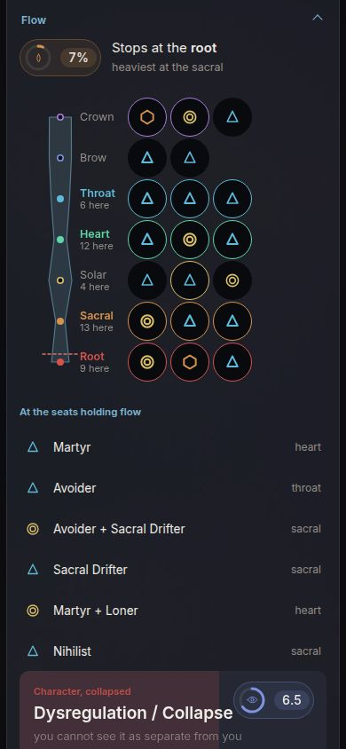</a><figcaption><b>River</b>, 390.</figcaption></figure>
<figure><a href="shots/4-james-390.jpg">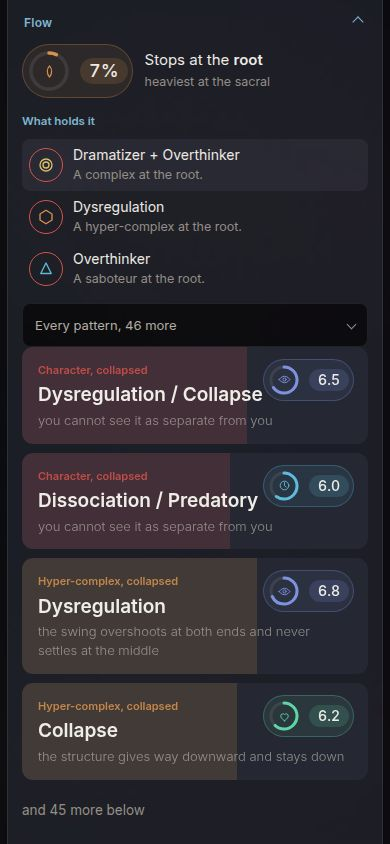</a><figcaption><b>Pinch</b>, 390.</figcaption></figure>
</div>

<h2>What was measured</h2>
<p>Range across the six ICPs, at 1600 wide. The phone read the same, except height, which differs by a few pixels.</p>
<div class="wrap"><table>
<tr><th></th><th>Shipped</th><th>Rows</th><th>Tiles</th><th>River</th><th>Pinch</th></tr>
<tr><td>Controls in the section</td><td class="num">8 to 14</td><td class="num">8 to 14</td><td class="num">8 to 14</td><td class="num">15 to 33</td><td class="num best">4</td></tr>
<tr><td>Words</td><td class="num">71 to 125</td><td class="num best">10 to 49</td><td class="num best">21 to 37</td><td class="num best">12 to 54</td><td class="num best">36 to 38</td></tr>
<tr><td>Bare figures printed</td><td class="num">11 to 31</td><td class="num best">1</td><td class="num best">1</td><td class="num">2 to 6</td><td class="num best">2</td></tr>
<tr><td>Height, pixels a person scrolls</td><td class="num">818 to 1,192</td><td class="num">255 to 579</td><td class="num">358 to 632</td><td class="num">388 to 700</td><td class="num best">291 to 308</td></tr>
<tr><td>Clinical labels shown (bipolar, ADHD, narcissism and the like)</td><td class="num">4 of 6 people</td><td class="num best">none</td><td class="num best">none</td><td class="num best">none</td><td class="num best">none</td></tr>
<tr><td>Says which patterns sit where flow is held</td><td>no</td><td>yes, per row</td><td>by a coloured ring</td><td>yes, by where it hangs</td><td class="best">yes, first thing</td></tr>
<tr><td>Tiers read</td><td>one layer</td><td>one layer</td><td>one layer</td><td>all tiers</td><td>all tiers</td></tr>
<tr><td>First pattern pressed, card opened and on screen</td><td class="num">12 of 12</td><td class="num">12 of 12</td><td class="num">12 of 12</td><td class="num">12 of 12</td><td class="num">12 of 12</td></tr>
</table></div>
<p class="rests">Floors held in all five at both widths: every control at or over 44 pixels once the seat row broke into two lines at desk width, nothing wider than the rail, no page error, no request leaving the file. Every press goes to the card the section opens today, <code>pmAnswer</code>, so no card was rewritten.</p>

<h2>The verdict</h2>
<div class="finding">
<p><b>Pinch as the face of the section, with River as what "every pattern" opens.</b></p>
<p>Pinch is the only option that answers his question in the first line, for every one of the six: where flow stops and which three patterns hold it there, or, for Sofia, Marcus and Angela, that nothing holds it. It is the shortest (under 310 pixels against up to 1,192 today), with 4 controls and 2 figures. What it hides, River shows best: all seven seats at once, and every pattern on the seat it sits on. River alone runs to 33 controls on James and Derek, over the house target of 12, which is why it belongs one press down.</p>
<p><b>Tiles is the weakest</b> despite matching the glass bar most closely. On one layer every pattern is the same tier, so every tile wears the same mark, which is the problem the Body figure's own comment already names: "three saboteurs are three of the same glyph, which is correct and says nothing". <b>Rows</b> is the safe edit of today's section.</p>
</div>

<h2>Questions for him, in full</h2>
<div class="q"><h3>1. Which option?</h3>
<ul><li><b>Pinch, opening into River.</b> The recommendation. Costs the per layer list as the first thing a practitioner sees.</li>
<li><b>Rows.</b> The smallest change from today. Costs a list that still reads one layer at a time and does not say first where flow stops.</li>
<li><b>River alone.</b> Most information. Costs up to 33 controls in one rail section.</li></ul></div>
<div class="q"><h3>2. One layer at a time, or every tier at once?</h3>
<p>Today the section follows the layer picked in the Body page's bar (Fetters, Saboteurs, Complexes, Hyper). River and Pinch read saboteurs, complexes and hyper-complexes together, because what holds flow does not care which tier it is.</p>
<ul><li><b>Every tier.</b> Answers his question. Costs the section and the Body figure above it showing different sets.</li>
<li><b>One layer.</b> The two agree. Costs a pattern holding flow being invisible until its layer is picked.</li></ul></div>
<div class="q"><h3>3. What counts as a pattern holding flow?</h3>
<p>As built, a pattern pinches a seat when most of its addresses sit on a seat the product already calls held. That rule is the prototype's, not the codex's.</p>
<ul><li><b>Keep it.</b> Uses only what the engine already measures. Costs a rule nobody has checked against the book.</li>
<li><b>Take it from the codex</b>, if the book says how a pattern stops a seat. Costs a reading of the book first.</li></ul></div>
<div class="q"><h3>4. Clinical labels in this section</h3>
<p>Today's rows print labels like "bipolar, ADHD" and "narcissism, histrionic" under the pattern's name, for four of the six. The code already records that clinical correspondence is kept off a person's own screen elsewhere, and names this as a separate defect. All four options drop them.</p>
<ul><li><b>Drop them here too.</b> Consistent with the rest of the product. Costs a practitioner the bridge to the language they trained in.</li>
<li><b>Keep them, behind the card, for a practitioner view.</b> Costs building the practitioner view first.</li></ul></div>
<div class="q"><h3>5. Weights as shape instead of figures</h3>
<p>Today prints between 11 and 31 figures in the section (weights, address counts, pass shares). The options draw weight as stroke width or bar length and print one or two figures.</p>
<ul><li><b>Shape only.</b> Follows his rulings on figures. Costs anyone comparing two weights precisely, who has to open the card.</li>
<li><b>Keep the weight on each row.</b> Costs ten to thirty more figures in one section.</li></ul></div>
</main>
